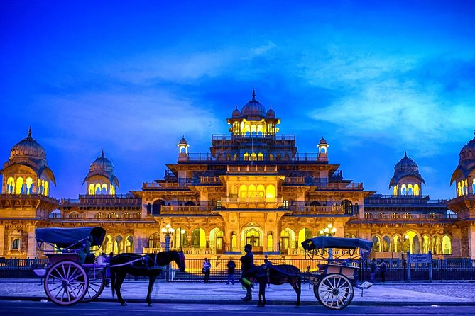
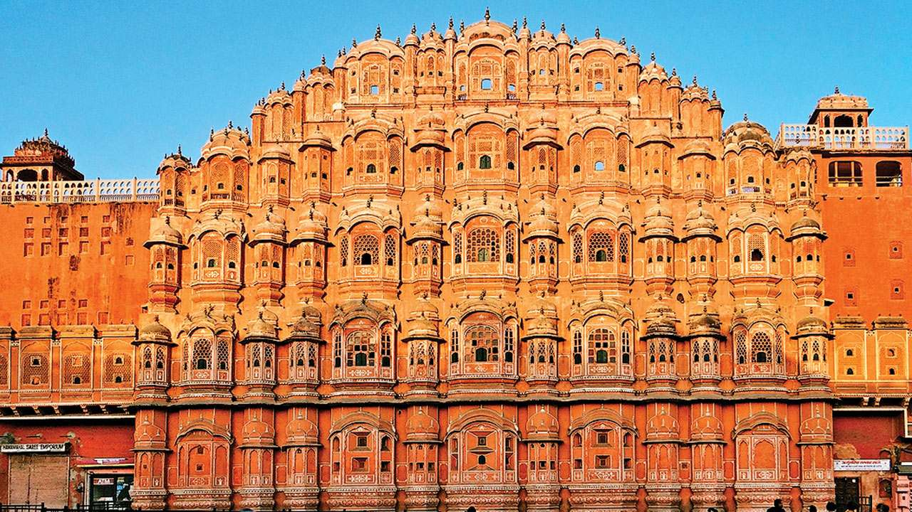

Albert Hall Museum
The Albert Hall Museum in Jaipur is the oldest museum of the state and functions as the state museum of Rajasthan, India. The building is situated in Ram Niwas garden outside the city wall opposite New gate and is a fine example of Indo-Saracenic architecture. It is also called the Government Central Museum. It was considered one of the best 19th century museums for the variety of its collections. It was renovated in 2008 and reopened as one of the most advanced museums in India.
Hawa Mahal
The Hawa Mahal is a palace in the city of Jaipur, India. Built from red and pink sandstone, it is on the edge of the City Palace, Jaipur, and extends to the Zenana, or women's chambers. The structure was built in 1799 by the Maharaja Sawai Pratap Singh, grandson of Maharaja Sawai Jai Singh, the founder of the city of jhunjhunu Rajasthan. He was so inspired by the unique structure of Khetri Mahal that he built this grand and historical palace. It was designed by Lal Chand Ustad. Its five-floor exterior is akin to a honeycomb with its 953 small windows called Jharokhas decorated with intricate latticework.The original intent of the lattice design was to allow royal ladies to observe everyday life and festivals celebrated in the street below without being seen. This architectural feature also allowed cool air from the Venturi effect to pass through, thus making the whole area more pleasant during the high temperatures in summer.Many people see the Hawa Mahal from the street view and think it is the front of the palace, but it is the back In 2006, renovation works on the Mahal were undertaken, after a gap of 50 years, to give a facelift to the monument at an estimated cost of Rs 4.568 million.The corporate sector lent a hand to preserve the historical monuments of Jaipur and the Unit Trust of India has adopted Hawa Mahal to maintain it.The palace is an extended part of a huge complex. The stone-carved screens, small casements, and arched roofs are some of the features of this popular tourist spot. The monument also has delicately modelled hanging cornices.
Amer Fort
Amer Fort or Amber Fort is a fort located in Amer, Rajasthan, India. Amer is a town with an area of 4 square kilometres (1.5 sq mi)located 11 kilometres (6.8 mi) from Jaipur, the capital of Rajasthan. Located high on a hill, it is the principal tourist attraction in Jaipur.Amer Fort is known for its artistic style elements. With its large ramparts and series of gates and cobbled paths, the fort overlooks Maota Lake,which is the main source of water for the Amer Palace. Amer Palace is great example of Rajput architecture. Some of its buildings and work have influence of Mughal architecture.Constructed of red sandstone and marble, the attractive, opulent palace is laid out on four levels, each with a courtyard. It consists of the Diwan-e-Aam, or "Hall of Public Audience", the Diwan-e-Khas, or "Hall of Private Audience", the Sheesh Mahal (mirror palace), or Jai Mandir, and the Sukh Niwas where a cool climate is artificially created by winds that blow over a water cascade within the palace. Hence, the Amer Fort is also popularly known as the Amer Palace.The palace was the residence of the Rajput Maharajas and their families. At the entrance to the palace near the fort's Ganesh Gate, there is a temple dedicated to Shila Devi, a Goddess of the Chaitanya cult, which was given to Raja Man Singh when he defeated the Raja of Jessore, Bengal in 1604. (Jessore is now in Bangladesh).[4][11][12] Raja Man Singh had 12 queens so he made 12 rooms, one for each Queen. Each room had a staircase connected to the King’s room but the Queens were not to go upstairs. Raja Jai Singh had only one queen so he built one room equal to three old queen’s rooms. This palace, along with Jaigarh Fort, is located immediately above on the Cheel ka Teela (Hill of Eagles) of the same Aravalli range of hills. The palace and Jaigarh Fort are considered one complex, as the two are connected by a subterranean passage. This passage was meant as an escape route in times of war to enable the royal family members and others in the Amer Fort to shift to the more redoubtable Jaigarh Fort.Annual tourist visitation to the Amer Palace was reported by the Superintendent of the Department of Archaeology and Museums as 5000 visitors a day, with 1.4 million visitors during 2007.At the 37th session of the World Heritage Committee held in Phnom Penh, Cambodia, in 2013, Amer Fort, along with five other forts of Rajasthan, was declared a UNESCO World Heritage Site as part of the group Hill Forts of Rajasthan